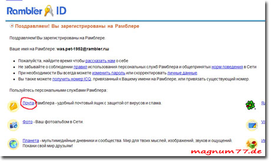

Переходим к созданию почтового ящика.
Переходим к созданию почтового ящика.
Но, для начала разберёмся зачем он нужен и что это такое.
Что это такое, понятно интуитивно, но как, железный ящик, может быть связан с интернетом? Очень просто, Вы хотите общаться во всемирной паутине с другими пользователями (т.е. с компьютерами).Всё очень просто. Для этого нам нужен компьютер посредник-Сервер. В случае если Ваш оппонент отключен, он получит сообщение позже, чего не может произойти напрямую. Для того чтобы сервер Вас идентифицировал, Вам потребуются Имя пользователя (Логин) и пароль, т.е. адрес отправителя. Также Вам необходим адрес получателя сообщения. Почтовый адрес в интернете выглядит примерно так: petrov@internet.com где petrov= логин, @= разделитель, обозначающий почтовый адрес (на русском "собака"), internet.com = имя почтового сервера. Также, очень удобно хранить информацию на почтовом сервере, которую можно получить с любого компьютера подключенного к интернету. Разумеется не конфиденциальную информацию. Вот такая вот ассоциация с железным ящиком.
Создание
Для создания русскоязычного почтового ящика, можно воспользоваться следующими бесплатными сервисами: www.rambler.ru; www.yandex.ru; www.mail.ru; www.pochta.ru и другими, но я рекомендую зарегистрироваться именно на www.rambler.ru, потому что этот сервис не требует наличия предварительного почтового ящика (для подтверждения регистрации).
Итак мы на рамблере.
Жмём на ссылку, как на рисунке.
Попадаем в меню Регистрация нового пользователя, заполняем как положено. Сразу хочу предупредить, что, возможно потребуется немало нервов, пока Вы подберёте свой логин. Это объясняется тем, что, большинство красивых и легко запоминающихся логинов уже заняты другими пользователями. Итак, логин придуман, жмём Продолжить.
Здесь заполняем все поля, пример показан на рисунке. На всякий случай логин, пароль и ответ на контрольный вопрос записываем в блокнот, сами знаете почему. На последнем этапе вводим цифры показанные на рисунке и жмём Зарегистрировать имя.

Поздравляем! Вы зарегистрированы на Рамблере.
Теперь жмём на ссылку почта, и попадаем в новоиспеченный почтовый ящик.
Важно: закончив работу с почтой и покидая почтовый ящик, необходимо нажать кнопку выход или logout. Этим действием Вы прерываете действие Вашего логина и пароля, т.е. запираете Ваш почтовый ящик.
До встречи,
Главная/Всё о компьютерах/Интернет для начинающих/Почтовый ящик

 У вас есть замечания/предложения?
У вас есть замечания/предложения?